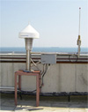
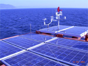
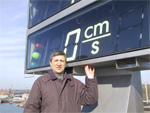

26 июля 2006г. завершена установка плавучего автоматического гидрометеорологического буя типа DB4280 (Aanderaa, Норвегия) в районе «Пенайские банки».
07.10.2005г сдана в эксплуатацию Спутниковая Система Швартовки E-SeaFIX, установленная в районе Эксплуатационной ответственности Морского терминала ЗАО «КТК-Р».
30.09.2004г сдана в эксплуатацию Система гидрометеорологического мониторинга в районе Эксплуатационной ответственности Морского терминала ЗАО «КТК-Р» целью повышения безопасности эксплуатации ВПУ.
29.07.2003г сдана в эксплуатацию Лазерная Система Швартовки Крупнотоннажных Судов (ЛСШКС), установленная на причалах нефтерайона ОАО «Новороссийский Морской Торговый Порт».